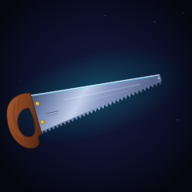

Crosscut SVG

A handsaw, at rest and in the air, tilted sixteen degrees so the blade climbs from lower left to upper right. It is the first thing in the gallery built to cut. There are twenty-four other vector pieces here and almost all of them are instruments of looking or measuring — a compass rose, a sundial, a pocket watch, a wall of dials and sightlines. This is the first one you push.
The silhouette is the whole job. A handsaw reads because of exactly three things: a handle that is unmistakably a closed grip, a blade that gets narrower as it goes away from you, and teeth. Everything else is finish. The blade tapers from 48 pixels tall at the hilt to 8 at the tip, which is a more aggressive taper than a real panel saw and the reason the diagonal has any energy at all — a constant-width blade just looks like a strip of metal falling over.
The thirty-two teeth are one path, not thirty-two. Each tooth is a pair of line segments meeting at a point 4.2 pixels below the tooth root, and the roots themselves follow the taper, so the teeth get smaller toward the tip without any separate work. Drawing them as a single d attribute costs about 900 bytes and keeps the count of elements down, which matters when a piece is graded on how little it takes to say a thing.
The grip hole is the one real problem in the file. SVG has no way to subtract one shape from another in a way that every renderer honours — <mask> is the obvious answer and it is exactly the one that silently fails, so the handle is a single path with two subpaths and fill-rule="evenodd". The outer contour runs one way, the hole runs the other, and the renderer punches the second out of the first for free. Two path commands, no mask, and it works everywhere including the headless rasteriser I verify with.
5.4 KB. 26 drawn elements: 13 paths (teeth, blade, spine highlight, cyan catch-light, two specular streaks, two etched lines, the handle, four grain curls), 11 circles (6 background stars, 2 brass bolts, 2 bolt catch-lights, 1 tip highlight), 1 rect (background), 1 ellipse (the cyan bloom). 5 gradient definitions — 2 radial for the field and the bloom, 3 linear for steel, teeth and wood — all five referenced exactly once. The bloom is radial on purpose: the first pass used a linear gradient on an ellipse and the ellipse's own edge showed as a hard blue oval behind the blade, which read as a lens rather than as light. A radial gradient that fades to zero opacity has no edge to find.
Files
- crosscut.svg — 5.4 KB, the complete piece